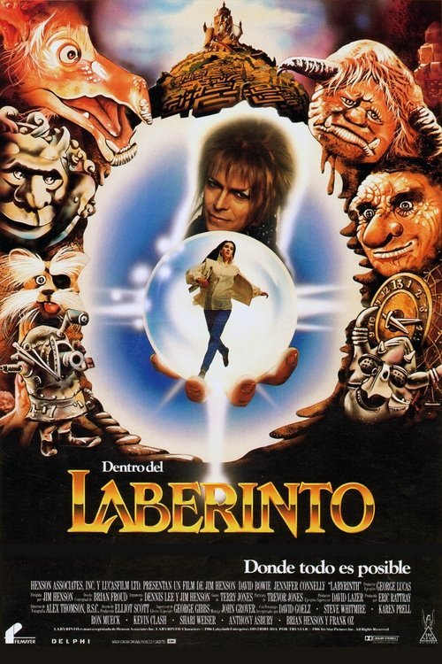

Dentro del laberinto (1986)
Sinopsis Rápida
Sarah, una adolescente rebelde, desea que los goblins se lleven a su hermanastro. Su deseo se cumple, y deberá aventurarse en un laberinto mágico para rescatarlo antes de que sea demasiado tarde.
Sinopsis Detallada
Dentro del Laberinto sigue a Sarah, una joven que invoca al rey Goblin Jareth para que se lleve a su hermanastro. Jareth acepta, pero solo si Sarah logra encontrar su camino a través de su laberinto mágico. La película es una mezcla de fantasía oscura, aventura y surrealismo, con criaturas extrañas y escenarios inolvidables. La confrontación entre Sarah y Jareth explora temas de la infancia, el crecimiento y la aceptación de la responsabilidad. El diseño de producción y efectos especiales son innovadores para su época.
¿Por qué tenés que verla?
- Una historia inolvidable con una estética visualmente impactante.
- La icónica actuación de David Bowie como Jareth, el Rey Goblin.
- Su influencia perdurable en el cine de fantasía y el diseño de criaturas.
- Una exploración de la madurez y la aceptación de la realidad.
Idea Extra
Análisis del simbolismo y la mitología presentes en el laberinto y sus criaturas.